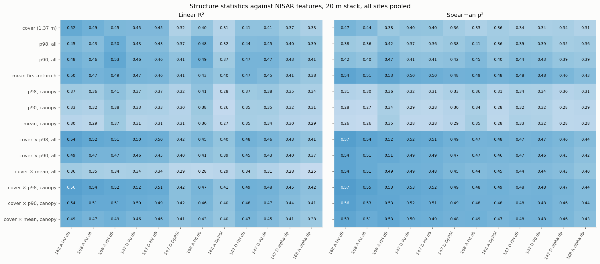
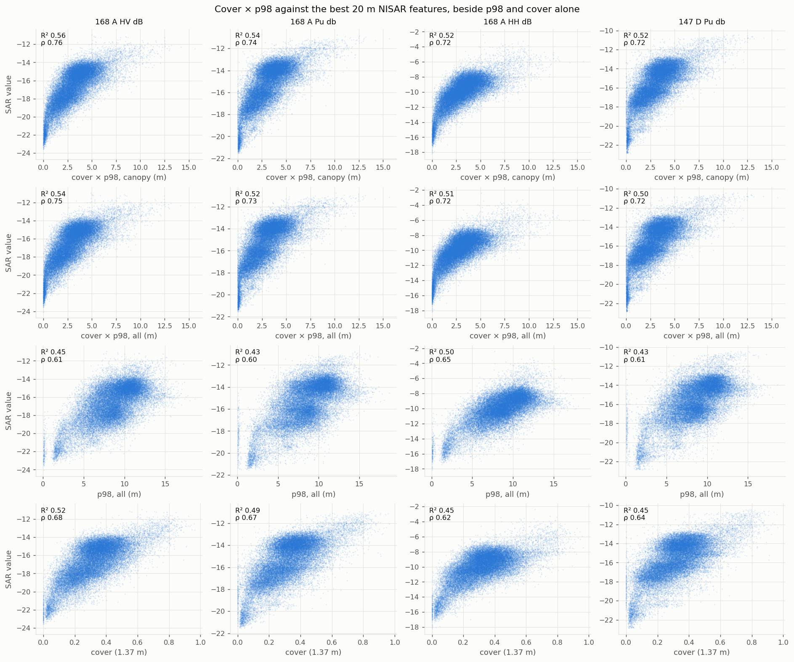
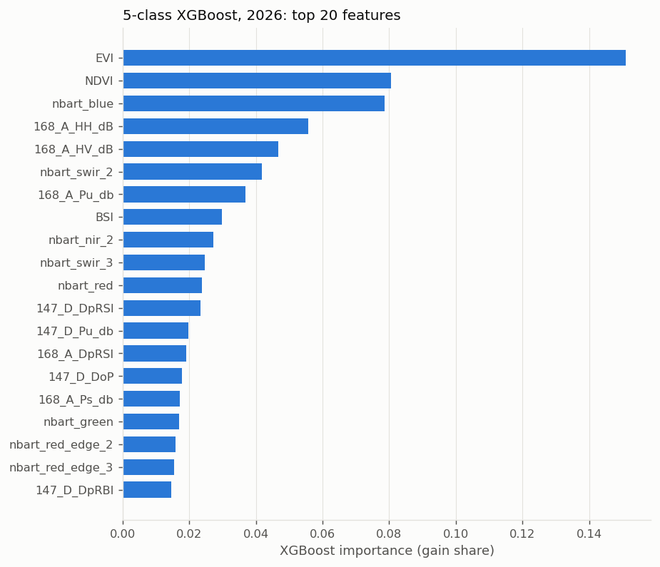

2 · The image stack
49 features, native NISAR 20 m grid (EPSG:32751, 11625 × 9081), images 2026-09-20 to 10-11.
Result
| Group | Sensor | Content | Dates |
|---|---|---|---|
| SAR (36) | NISAR L-band GSLC | γ0 HH / HV + dual-pol decomposition (Pu, Ps, Pd, DpRSI, alpha …), 2 tracks (147 D, 168 A), Refined Lee 9 × 9, decomposition window 5; coherence not used | 147 D 09-28, 10-10; 168 A 09-29, 10-11 |
| Sentinel-1 C-band | γ0 VV / VH + decomposition, monthly mosaic (CDSE) | September 2026 | |
| MS (13) | Sentinel-2 | NBART bands + NDVI, EVI, BSI …, geomedian | 2026-09-20 to 10-10 |
File: E:\nisar_2026\feature_stack_2026_gslcg0_rflee9_ws5_s1.tif (not yet available).
The images bracket the 2026 LiDAR flights (10-05 to 10-09).
How we chose it
The first 2026 stack used NISAR GCOV, Refined Lee 5 × 5. The accuracy diagnosis (Stage 1 / 1.5) then tested the NISAR processing:
- Radiometry (γ0 / σ0), GSLC γ0 vs GCOV, a no-phase decomposition, filter and decomposition windows.
- None of this raised the NISAR + S2 classification beyond the noise (OA 0.709–0.726).
- NISAR alone gained +0.038 OA with GSLC and a 9 × 9 filter → this became the reference stack.
- Sentinel-1 added nothing to the classification, but it adds to the regression (cover, below).
Detail: NISAR accuracy diagnosis (Stage 1, 1.5).
What each sensor carries
| target | NISAR | S1 | S2 |
|---|---|---|---|
| mean | 0.540 (0.010) | 0.020 (0.001) | 0.509 (0.008) |
| cover | 0.312 (0.006) | 0.204 (0.014) | 0.377 (0.004) |
source: class_defs/outputs/regression/score_importance.csv (2026-11-02 14:41)
Drop in K-fold R² when one sensor's features are permuted (RF, ALL stack). NISAR and S2 carry the px mean height about equally. S1 matters for cover, not for height.



Code
- Stack: nisar_2026\feature_stack_2026.py
(
--sar gslc_gamma --rflee-win 9 --dcmp-ws 5 --s1). - S2 geomedian: s2_geomedian_2026.py; S1 mosaic: diagnosis\s1_mosaic_2026.py.
- Refined Lee filter:
G:\python\GDV\GEDI\rflee.py. NISAR product list:E:\NISAR\README.md.